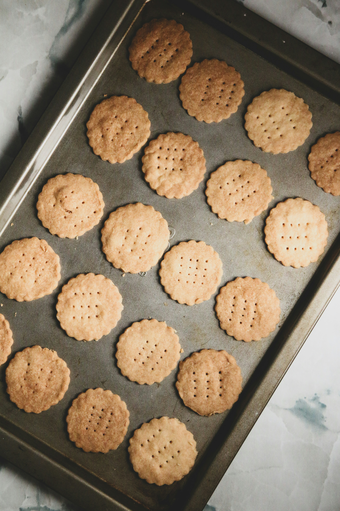

Sourdough Graham Crackes

Ingredients
- 100g Sourdough Starter
- 1 Cup Flour
- 55g Whole Wheat Flour
- 10g Salt
- 1 Cup Light Brown Sugar
- 1 Tablespoon Honey
Recipe
- Mix all ingerdients in a bowl until combined.
- Let dough rest for 1 hour in the fridge.
- Roll dough into thin, 1/4 sheet and cut into rectangles.
- Place rectangles on to baking sheet and make holes with a fork.
- Bake for 25 minutes at 375.